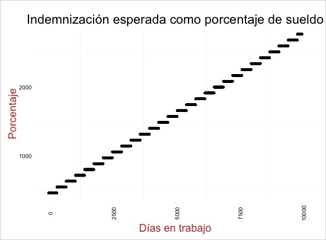
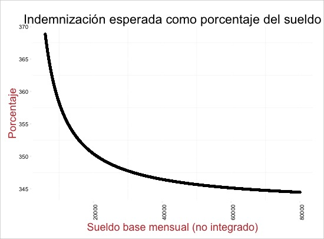
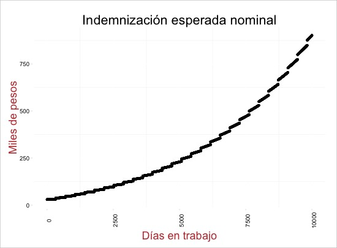

Propósito
Derivado de un estudio inicial, (que se puede consultar aquí) se decidió organizar al esfuerzo de innovación en un par de productos potenciales: seguros de bienestar (o en conjunto con otras empresas proveedoras de servicios afínes), seguros de despido o contra un desempleo potencial y seguros de otra índole fiscal.
En este caso, comenzamos por evaluar la factibilidad, así como el diseño de un seguro de despido en tres principales áreas:
- Potencial de mercado
- Potencial legal
- Potencial de riesgo
Así mismo, se hace un esfuerzo por plantear recomendaciones y un diseño inicial de un producto con estas características.
Este primer paso esta dirigido como un acercamiento, para posteriormente afinar las condiciones mediante lo considere necesario APV, sus socios y su área de riesgo.
Resumen
El seguro de despido, es algo novedoso en el mercado mexicano. Pues si bien se ha hecho un intento por proveer de seguros de desempleo, tanto a nivel público como privado, este producto pretende atar al problema por una vía más institucional: la del empleador.
Los seguros de desempleo, como su nombre implica, son seguros con un componente que cubre una eventualidad de desempleo personal. El principal problema con esto es encontrar a aquellos que no representen riesgo moral (1), es decir, que no tengan incentivo por mantenerse desempleados y cobrar el seguro indefinidamente.
Quienes ofrecen actualmente este tipo de seguros, incluyendo un esquema limitado por parte de diversos gobiernos, pretenden reducir este riesgo mediante la limitación de pagos.
Por ejemplo, el esquema propuesto en la Reforma Hacendaria más reciente, incluye pagos decrecientes, a medida que el incentivo por encontrar empleo incrementa conforme pasa en tiempo.
Este tipo de seguros de desempleo básicamente depende de dos componentes para ser exitosos:
- Una manera objetiva de comprobar el estado de desempleo y sin riesgo de fraude
- Datos suficientes para extrapolar riesgos de desempleo.
Generalmente, resulta difícil para el asegurador encontrar la probabilidad de que suceda el suceso asegurado, puesto que depende de un tercero (el empleador).
Por otro lado, en un seguro enfocado en el mismo suceso, pero para los empleadores, como el propuesto, ambos componentes son bien conocidos por el beneficiario. En este sentido, se abre la posibilidad de otro tipo de riesgo: que el empleador propicie a su conveniencia el despido para generar ganancias por arbitración.
Resulta evidente que sin candados suficientes y con un pago mayor al equilibrio, existe un riesgo alto de ello.
No obstante, bajo un diseño suficientemente estricto, es posible reducir los anteriores casos suficientemente.
El seguro de descrito además tiene el beneficio para el cliente de prevenir crisis y aminorar los cambios abruptos en caso de una caída en ventas o producción.
Si bien muchas empresas tienen un “fondo” o dinero presupuestado para finiquitar a personal durante un periodo de crecimiento “normal”, las circunstancias de volatilidad pueden propiciar caídas en ventas abruptas, que inciten a mayores recortes de personal que los presupuestados.
En este caso, el seguro serviría como un estabilizador automático. La empresa paga una prima mensual, por una poliza que se paga cuando las condiciones en el contrato estipulen necesaria un recorte de personal importante.
Bajo estas circunstancias, a la empresa se le mantiene cierta agilidad al adaptarse a crisis económicas o de demanda, permitiéndoles manejar sus finanzas de corto plazo de manera más sana.
Además del obvio beneficio de la agilidad, el seguro permite potencialmente a la empresa aprovechar el esquema fiscal vigente para mejorar sus ganancias y flujos.
~ | Esquema general
El esquema general se puede ver a continuación.
- foto
Siempre y cuando el monto apropiado por la aseguradora sea menor a los ahorros potenciales fiscales de la empresa, el esquema conviene.
Para el trabajador el esquema es transparente: no le interesa que fondo le paga su liquidación legal, siempre y cuando esta se haga. Para términos legales, la empresa también se encuentra amparada, puesto que cumple con toda la legislación laboral vigente.
Potencial de Mercado
~ | Demografía
Para medir el mercado potencial del producto es necesario reducir a empresas formales el análisis. Lo anterior por el hecho de que una empresa formal es mucho más propensa a pagar derechos laborales de acuerdo con la ley o superior a ellos. De acuerdo con (“Instituto Nacional de Estadística y Geografía,” 2015), en México hay __ empresas constituidas formalmente, ligeramente (__) a las estipuladas por el SAT (2).
De
~ | Necesidad
Los seguros de esta índole tienen un mercado grande, pero ha sido limitado por restricciones de riesgo. De hecho (Congleton, 2012) argumenta que tras todas las crisis económicas, el pago de este tiende a darse, pero de manera “ex-POST”, es decir, que se presiona a gobiernos a proveer el beneficio previo a pagar el precio (lo que comunmente se conoce como un “bailout”).
crisis insurance is a type of insurance that private markets under-provide, even though there is broad demand for such financial instruments.
[...]
Although some groups are more effective at gaining “ex-post insurance” programs than others, a broad range of loss-limiting programs are routinely provided by democratic governments after unusually bad weather, earthquakes, epidemics, and economic crises.
(Congleton, 2012)
En un país con leyes laborales menos flexibles como México también existe un margen para eficientizar la planeación financiera.
De acuerdo con la legislación vigente, haciendo un análisis superficial, el pago esperado de indemnización ronda (en el caso con menos antiguedad) el 340% del sueldo mensual, lo que implica que las empresas enfrentan fuertes costos al momento de agilizar su fuerza laboral. Correr a alguien es caro, y por lo tanto también contratar.
El esquema de compensación actual es complicado, pero haciendo unas simulaciones de un set fijo de escenarios (se puede consultar la metodología aquí) podemos encontrar interesantes conclusiones.
Primero, el pago esperado por indeminización por ley(3) obliga por de-facto a las empresas a un periodo de prueba a su vez que compensa desproporcionadamente al empleado conforme acumula antiguedad. En la práctica, este periodo es potencialmente de 3 meses (los tres pedidos por el Artículo 123 Constitucional), mientras que aún con un sueldo fijo, la indemnización se vuelve cada vez una opción más atractiva para el empleado.
Por ejemplo, aún en el rango medio salarial (aproximadamente 5 salarios mínimos), y sin crecimiento nominal en el ingreso, a los 15 años de trabajo, la liquidación aproximaría los 17 meses de sueldo.

Segundo, la legislación también propicia la movilidad laboral (o protege, depende como se vea) en los estratos de ingreso más bajos. El incentivo por cobrar una liquidez disminuye primero de manera acelerada, hasta llegar a aproximadamente los 15 salarios mínimos (aproximadamente 31 mil pesos mensuales).

En los escenarios previos, asumimos que no existe crecimiento en el salario (ni siquiera ajuste inflacionario). Sin embargo, al contemplar un incremento conservador de un 4% anual por inflación y un 2.5% por crecimiento en productividad y resposabilidades, obtenemos una curva mucho más pronunciada.

De acuerdo con una serie de estudios económicos (Smart & Stabile, 2005), el valor nominal actua más como un referente en la mente de los sujetos económicos que el valor relativo (en este caso el porcentaje respecto a un sueldo). Por ello, se puede tentativamente concluir que en incentivo es creciente, mientras pasa más tiempo.
Por supuesto, todo esto asume que el empleado actúa de acuerdo al incentivo de la liquidación. Por una, la decisión no es suya sino de su empleador. No obstante, el empleado puede influenciar la probabilidad de que ello suceda, por ejemplo afectando su desempeño laboral de manera obvia.
Muchos factores entran en consideración al momento de la relación laboral, incluyendo algunos no monetarios, sin embargo, no se puede ignorar que el incentivo por ser liquidado es cada vez mayor, un predicamento que los empleadores sin duda quisieran evitar.
~ | Marco Conceptual
Para obtener un marco de referencia sobre los beneficios de un seguro como el propuesto, podemos generalizar algunos de los conceptos previos para el producto:
- La prima, como porcentaje del sueldo, sería la misma hasta los 15 salarios mínimos, decreciendo después.
- La prima incrementaría con los años trabajando (de antigüedad, no de edad).
Existe, además, un punto de ventas adicional: se ha comprobado en diversos estudios (4) que los seguros de desempleo generan beneficios potenciales a la salud.
En dos estudios particularmente rigurosos se encontraron limitados pero significativos efectos:
-
A 63% increase in [unemployment] benefits completely offsets the impact of unemployment on self-reported health
(Cylus, Glymour, & Avendano, 2014) -
A 1% increase in [unemployment] benefits was associated with 18% lower odds of CVD [Cardio-vascular disease]
(Walter, Glymour, & Avendano, 2014)
En este sentido, hay potencial para empaquetar este producto con un seguro de vida tradicional, al ofrecer un pequeño descuento bajo esta lógica.
the ability to respond to unpleasant surprises is nearly always enhanced by the existence of readily available pools of resources that can be used to address a crisis and its consequences.
(Congleton, 2012)
In general, the underpricing of “bailouts” tends to encourage smaller private rainy day funds, smaller purchases of private insurance, and also somewhat more risky behavior. Guaranteeing the securities of financial institutions tends to encourage imprudent risk taking.
(Congleton, 2012)
Subsidized flood insurance encourages more expensive and frail houses to be built on river flood plans and along sea coasts
(Congleton, 2012)
As more and more crisis insurance is explicitly or implicitly added to a government’s core responsibilities without explicit policies to finance it through ex-post (or ex-ante) fees or taxes to beneficiaries, governments move closer to their borrowing limits. The finite size of the world’s sovereign debt markets implies that there is an upper bound on the extent to which even large and historically “safe” governments can serve as the “insurers of last resort.”
(Congleton, 2012)
Potencial Legal
Si bien la Ley Ingresos Sobre la Renta (LISR) no contiene una mención específica sobre este tipo de instrumentos financieros, esta misma establece un monto máximo de deducibilidad por prima de seguro de 152 mil pesos anuales.
Considerando que cada prima cubriría a un solo empleado, el potencial de ahorros es sustancial si se obtienen primas individuales.
No obstante, la misma LISR contiene artículos favorecedores para productos y seguros para el retiro. En estos casos, el asegurado no paga impuestos sobre la prima si se cobra el seguro después del retiro.
Sería relativamente fácil incluir un esquema similar en este producto, asegurando el cobro del monto hasta la edad de retiro del asegurado.
Este último dependería, desde luego, de la edad de asegurado, así como de las características del empleo.
~ | Antecedentes
En el año 2002 se inició un programa piloto llamado Sistema de Apoyos Económicos a Buscadores de Empleo el cual formó parte del Programa de Apoyo al Empleo, este programa estaba dirigido a personas que habían perdido su empleo y requerían apoyo para enfrentar gastos de búsqueda. Se otorgaba un apoyo de hasta un salario mínimo, durante 1 mes (Maya Bautista, 2012).
Por otro lado, desde entonces las Administradoras de Fondos para el Retiro (AFORES) ofrecen la opción de disponer del diez por ciento del monto acumulado en la cuenta del trabajador una vez cada cinco años por situación de desempleo (Maya Bautista, 2012).
En el 2007 el Gobierno del Distrito Federal creó un Seguro de Desempleo, instituyéndolo como un programa de gobierno a partir del 28 de agosto de 2008 fundamentado en la Ley de Protección y Fomento al Empleo para el Distrito Federal aprobada por la Asamblea del Distrito Federal y publicada el 8 de octubre del mismo año.
Las reglas de operación fueron adicionadas en el 2015, para estipular, entre otros, lo siguiente:
- Será entregado mensualmente a la persona beneficiaria a través de una tarjeta bancaria u otro mecanismo 30 veces la Unidad de Cuenta (5) de la Ciudad de México. (6)
- Las personas beneficiarias sólo pueden acceder al Seguro durante un plazo no mayor a seis meses, cada dos años.
En el 2013, como parte de la Reforma Hacendaria se propuso un esquema de seguro de desempleo a nivel nacional y a través del Instituto Mexicano del Seguro Social (IMSS). Dicha iniciativa, plasmada en el proyecto de la Ley del Desempleo, contemplaba el siguiente tabulador de pagos del seguro, de acuerdo al monto promedio cotizado en los últimos 24 meses antes el IMSS:
| Mes | 1 | 2 | 3 | 4 | 5 | 6 |
| % de Cotización | 60% | 50% | 40% | 40% | 40% | 40% |
No obstante, en la ley final en vez de una cobertura universal y pagada en totalidad por el estado, se optó por un esquema compartido, como en el caso de Argentina y Chile (7).
Este esquema contempla que el financiamiento se haga mediante un fondo de aportaciones que el patrón está actualmente obligado a pagar al Infonavit, equivalente al 5% sobre el salario.
De esa aportación, el 40% se depositará en una subcuenta mixta y el 20% a un fondo solidario.
En caso de que el trabajador adquiera un crédito del Infonavit, podrá hacer uso del saldo en la subcuenta mixta destinada al seguro de desempleo y las aportaciones subsecuentes se destinarán al pago del saldo insoluto de dicho crédito.
En caso de necesitar del seguro de desempleo, y contar con un crédito y haber hecho uso del saldo de la subcuenta mixta, el trabajador sólo recibirá un monto fijo de un mes de salario mínimo hasta por seis meses.
El beneficio del seguro de desempleo sólo podrá recibirse una vez cada cinco años.
En la práctica, esto equivale a decidir entre el seguro de desempleo en su totalidad, al menos en el mediano plazo, y un crédito de vivienda.
Con este arreglo, ni el patrón ni los egresos del gobierno se vieron comprometidos de manera importante, pero el Seguro de Desempleo continúa siendo parte de un fondo de seguro social que es poco probable que se use de manera extensiva.
~ | Esquema actual de financiamiento y pagos de Seguro de Desempleo
| Aportación (% Salario) | Fondo |
| 2% | Infonavit |
| 2% | Subcuenta Mixta |
| 1% | Fondo Solidario |
~ | Simplificaciones posteriores
A partir de Junio del 2015, los trabajadores afiliados a un AFORE que deseen hacer un retiro por desempleo ya no necesitarán acudir al Instituto Mexicano del Seguro Social (IMSS) a tramitar el documento que certifique la pérdida de la relación laboral, como anteriormente se hacía (8)
Otros cambios marginales incluyen la deducción a las cuentas para el retiro. Al depositar en tu subcuenta de ahorro complementario de tu Afore, puedes deducir hasta 10% de tus ingresos, esto sin exceder cinco salarios mínimos generales anuales de tu área geográfica.
En este sentido, es importante una aclaración para el tema fiscal: el beneficio únicamente aplica si el dinero cumple el requisito de permanencia para el plan de retiro; es decir, que solo se usa al momento de la jubilación.
Potencial de Riesgo
El riesgo moral es evidente en un caso atípico de colusión entre el empleador y el empleado.
Existe un obvio desincentivo por
El
~ | Colusión
Si bien no existe un incentivo individual por ser despedido, ni un incentivo por parte del empleador, existe el potencial de colusión. En un escenario de colusión, a ambos les conviene cobrar el seguro cuando el evento no existe. Por ejemplo: el empleado y su empleador pueden acordar un despido injustificado para cobrar el seguro, con una promesa de obtener su empleo de nuevo y dividirse el pago.
Diseño Preliminar
El contrato para una prima del seguro implicaría, entre otros, las siguientes condiciones:
- Un contrato con persona moral o fisica con actividad empresarial que actua como el beneficiario.
- Un
~ | Evento a asegurar
En México, existen a grandes razgos dos conceptos de indemnización vigentes:
-
Indemnización constitucional: Como su nombre lo establece, esta indemnización está fundada en la fracción XXII del artículo 123 de la Constitución, en donde se manifiesta la obligatoriedad para el empleador de proporcionar una indemnización al trabajador con el importe de 3 meses de salario.
-
Indemnización LFT: Esta indemnización se detalla en el artículo 50 de la Ley Federal del Trabajo y contempla los siguientes supuestos:
El Articulo 50 de la Ley Federal de Trabajo, establece:
ARTICULO 50. LAS INDEMNIZACIONES A QUE SE REFIERE EL ARTICULO ANTERIOR CONSISTIRAN:
I. Si la relación de trabajo fuere por tiempo determinado menor de un año, en una cantodad igual al importe de los salarios de la mitad del tiempo de servicios prestados; si excediera de un año, en una cantidad igual al importe de los salarios de seis meses por el primer año y de veinte días por cada uno de los años siguientes que hubiese prestado sus servicios;
II. Si la relación de trabajo fuere por tiempo indeterminado, la indemnización consistira en veinte días de salario por cada uno de los años de servicios prestados; y
III. Además de las indemnizaciones a que se refieren las fracciones anteriores, en el importe de tres meses de salario y en el de los salarios vencidos desde la fecha del despido hasta que se paguen las indemnizaciones.
~ | Casos sin asegurar
- Si el Asegurado renuncia voluntariamente a su empleo.
- Cuando el Asegurado desempeñe funciones como director general, accionista o miembro del consejo de administración de la empresa.
- Desempleo derivado de la terminación de la relación laboral por mutuo consentimiento.
- Despido o terminación de la relación de trabajo por las causas descritas en el Artículo 47 de la Ley Federal del Trabajo (despido con causa). (missing reference)
- Por la participación del Asegurado en paros, o disputas laborales y/o huelgas.
- Derivado de programas anunciados por el empleador del Asegurado previo a la fecha de inicio de la vigencia de la cobertura, para reducir su fuerza de trabajo o iniciar despidos que de manera específica o en general.
- Cuando el Asegurado hubiere tenido conocimiento de que se produciría su desempleo, dentro de los noventa (90) días anteriores a la fecha en que se contrate el Crédito.
~ | Clausulas adicionales
Con el fin de evitar eventos catastroficos, tales como los usados en la industria aseguradora de hogares:
[...] home insurance policies have a maximum payout and routinely exclude losses from floods and revolutions (for which multiple, very large, simultaneous claims are likely)
(Congleton, 2012)
Es necesario una serie de clausulas que eviten el cobro inmediato de un número alto de polizas tales como:
- Solamente se puede cobrar un máximo del n% de la fuerza laboral de la empresa, por mes o periodo.
- Se excluyen eventos derivados de pérdida del empleo por guerra declarada o no declarada, conmoción civil, insurrección, rebelión, motín, o catástrofe nuclear.
Fuentes
- Leisten, H. (2015). Perspectives in Insurance. BCG Perspectives. Retrieved from https://www.bcgperspectives.com/content/articles/insurance_perspectives_in_insurance/
- Katt, P. C. (2015). History of Cash Value Life Insurance and Implications for Existing Policies, (August).
- Demaster, B., & Lyons, P. (2015). How Life Insurers Can Bring Their Business into the 21st Century. Harvard Business Review. Retrieved from https://hbr.org/2015/03/how-life-insurers-can-bring-their-business-into-the-21st-century
- Huber, C., & Schmeiser, H. (2015). HOW DOES PRICE PRESENTATION INFLUENCE CONSUMER CHOICE? THE CASE OF LIFE INSURANCE PRODUCTS, 431(2), 401–431. doi:10.1111/j.1539-6975.2013.12026.x
- Guti, U. (2015). La reforma tributaria de 2013: los problemas de la Hacienda publica y la desigualdad en Mexico, XXII(64), 69–100.
- Larson, S. J. (2015). Considering Time in a Life Insurance Needs Analysis, (September), 62–72.
- Bohnert, A., Gatzert, N., & Jorgensen, P. L. (2015). On the management of life insurance company risk by strategic choice of product mix, investment strategy and surplus appropriation schemes. Insurance: Mathematics And Economics, 60, 83–97. doi:10.1016/j.insmatheco.2014.11.003
- Sheila, M., & Gonzalez, G. (2015). Reforma Hacendaria: la importancia del Regimen de Incorporacion Fiscal como medida de desarrollo economico en Mexico y posibles impactos, 71–77.
- International, B. M. (2015). Mexico Insurance Reports Q2-2012 - Q4-2015.
- Millo, G., & Carmeci, G. (2015). A Subregional Panel Data Analysis of Life Insurance Consumption in Italy. Journal Of Risk and Insurance, 340(2), n/a–n/a. doi:10.1111/jori.12023
- Card, D., Johnston, A., Leung, P., Mas, A., & Pei, Z. (2015). The Effect of Unemployment Benefits on the Duration of Unemployment Insurance Receipt : New Evidence from a Regression Kink Design in Missouri, 2003-2013 , 105(5), 1–10. doi:10.1257/aer.p20151061
- Littlewood, J. (2014). 2014 Global Insurance Outlook. Ernst &Amp; Young, Global Reports. Retrieved from http://www.ey.com/Publication/vwLUAssets/EY-latin-america-insurance-outlook-2014/$FILE/EY-latin-america-insurance-outlook-2014.pdf
- Reader, G. (2014). A New World of Opportunity: The insurance innovation imperative. KPMG Global Insights. Retrieved from https://www.kpmg.com/CN/en/IssuesAndInsights/ArticlesPublications/Documents/A-New-World-of-Opportunity-insurance-innovation-O-201509.pdf
- Stavrunova, O., & Yerokhin, O. (2014). Tax incentives and the demand for private health insurance. Journal Of Health Economics, 34(1), 121–130. doi:10.1016/j.jhealeco.2014.01.001
- Maciaga B., S. A., Shah A., & A., S. (2014). The Fundamental Trends Reshaping Life Insurance. Retrieved from https://www.bcgperspectives.com/content/articles/insurance_fundamental_trends_reshaping_life_insurance/
- Arranz, J. M. M., & Garcı́a-Serrano Carlos. (2014). Duration and Recurrence of Unemployment Benefits. Journal Of Labor Research, (June), 271–295. doi:10.1007/s12122-014-9184-6
- Yoon, E. (2014). Finding Your Superconsumers When It Isn’t Obvious Who They Are. Harvard Business Review. Retrieved from https://hbr.org/2014/05/finding-your-superconsumers-when-it-isnt-obvious-who-they-are
- Hannsgen, G. (2014). Fiscal Policy, Chartal Money, Mark-up Dynamics and Unemployment Insurance in a Model of Growth and Distribution. Metroeconomica, 65(3), 487–523. doi:10.1111/meca.12050
- Cylus, J., Glymour, M. M., & Avendano, M. (2014). Health Effects of Unemployment Benefit Program Generosity. American Journal Of Public Health, 105(2), 317–323. doi:10.2105/AJPH.2014.302253
- Parrish, S. (2014). IRM Permanent Life Insurance in Financial Planning , (October), 30–33.
- Walter, S., Glymour, M., & Avendano, M. (2014). The Health Effects of US Unemployment Insurance Policy: Does Income from Unemployment Benefits Prevent Cardiovascular Disease? PLoS ONE, 9(7), e101193. doi:10.1371/journal.pone.0101193
- Tool, C. F. (2014). Insurance & Risk Management, (March), 34–37.
- Lorson, J., & Wagner, J. (2013). Sales Efficiency in Life Insurance: On Growth and Profitability in the German Market. I.VW-HSG Working Paper, (2009). doi:10.1057/gpp.2013.35
- Silva, K. R., & Afonso, L. E. (2013). A Study on life microinsurance in Brazil. Brazilian Business Review (English Edition), 10(3), 130–155. doi:10.15728/bbr.2013.10.3.6
- Wu, X., & Gan, L. (2013). Multiple Dimensions of Private Information in Life Insurance Markets. Retrieved from http://www.nber.org/papers/w19629
- Sen, S., & Madheswaran, S. (2013). Regional determinants of life insurance consumption: Evidence from selected Asian economies. Asian-Pacific Economic Literature, 27(2), 86–103. doi:10.1111/apel.12024
- Torre, a. D. L., Feyen, E., & Ize, a. (2013). Financial Development: Structure and Dynamics. The World Bank Economic Review, 27(3), 514–541. doi:10.1093/wber/lht005
- Hendren, N. (2013). Private Information and Insurance Rejections. Econometrica, 81(5), 1713–1762. doi:10.3982/ECTA10931
- Gersbach, H. (2013). Preventing Banking Crises—with Private Insurance? CESifo Economic Studies, 59(4), 609–627. doi:10.1093/cesifo/ifs043
- Congleton, R. D. (2012). On the political economy and limits of crisis insurance: the case of the 2008-11 bailouts. Public Choice, 150(3/4), 399–423. doi:10.2307/41406889
- Catastrophes, N. F. O. R., & Insurance, X. (2012). Insurance Against Financial Crises ? Business, (62), 16–18.
- Sliwinski, A., Michalski, T., & Roszkiewicz, M. (2012). Demand for Life Insurance—An Empirical Analysis in the Case of Poland. The Geneva Papers On Risk and Insurance Issues and Practice, 38(1), 62–87. doi:10.1057/gpp.2012.21
- Liebertberg, A. P., Carson, J. M., & Dumm, R. E. (2012). a Dynamic Analysis of E Demand for Life Insurance, 79(3), 619–644. doi:10.1111/j.l539-6975.2011.01454.x
- Maya Bautista, J. E. (2012). Pacto por Mexico: Seguro de Desempleo. Retrieved from http://ciep.mx/entrada-investigacion/pacto-por-mexico-seguro-de-desempleo/
- Gatzert, N., Holzmüller, I., & Schmeiser, H. (2012). Creating Customer Value in Participating Life Insurance. Journal Of Risk and Insurance, 79(3), 645–670. doi:10.1111/j.1539-6975.2011.01453.x
- Hong, J. H., & Rı́os-Rull José-Vı́ctor. (2012). Life Insurance and Household Consumption. American Economic Review, 102(7), 3701–3730. doi:10.1257/aer.102.7.3701
- Koven, E., R. & Zimmerman. (2011). Is There a Business Case for Microinsurance? A review of recent literature. Retrieved from http://www.microinsurancecentre.org/resources/documents/business-case-for-microinsurance/is-there-a-business-case-for-microinsurance-a-review-of-recent-literature.html
- Paper, W., Econ, B., & Papers, D. (2011). The Effect of Secondary Markets on Equity-Linked Life Insurance with Surrender Guarantees, 81(4), 943–968. doi:10.1111/j.1539-6975.2013.12003.x
- Chen, H.-Y., Lee, C.-F., Tai, T., & Wang, K. (2011). Fiscal and Monetary Policies in Reaction to the Financial Tsunami by the Taiwanese Government. Review Of Pacific Basin Financial Markets and Policies, 14(01), 153–169. doi:10.1142/S0219091511002172
- Giesbert, L., Steiner, S., & Bendig, M. (2011). Participation in Micro Life Insurance and the Use of Other Financial Services in Ghana. Journal Of Risk and Insurance, 78(1), 7–35. doi:10.1111/j.1539-6975.2010.01405.x
- Gatzert, N. (2010). The secondary market for life insurance in the United Kingdom, Germany, and the United States: Comparison and overview. Risk Management And Insurance Review, 13(2), 279–301. doi:10.1111/j.1540-6296.2010.01187.x
- Lancaster, L. (2010). Changes in Federal and State Unemployment Insurance Legislation in 2009. Monthly Labor Review, 133(1), 37–58. Retrieved from http://www.bls.gov/opub/mlr/#\backslashnhttp://search.ebscohost.com/login.aspx?direct=true&db=ecn&AN=1112916&site=ehost-live&scope=site
- Shatto, P. D., & Costonis, M. (2010). The Life Insurance Industry Needs To Get With The Times. Forbes. Retrieved from http://www.forbes.com/2010/01/13/life-insurance-industry-leadership-managing-marketing.html
- Sinha, R. P. (2010). Revenue Maximizing Efficiency of Life Insurance Companies : Some Indian Evidence.
- Fang, H., & Kung, E. (2010). How does life settlement affect the primary life insurance market? Retrieved from http://www.nber.org/papers/w15761
- Ching, K. S., Kogid, M., & Furuoka, F. (2010). Causal Relation between Life Insurance Funds and Economic Growth Evidence from Malaysia. Asean Economic Bulletin, 27(2), 185. doi:10.1355/ae27-2c
- Ibiwoye, a, Ideji, J., & Oke, B. (2010). the Determinants of Life Insurance Consumption in Nigeria: a Co-Intergration Approach. INTERNATIONAL JOURNAL Of ACADEMIC RESEARCH, 2(4), 351–359. Retrieved from http://scholar.google.com/scholar?hl=en&btnG=Search&q=intitle:THE+DETERMINANTS+OF+LIFE+INSURANCE+CONSUMPTION+IN+NIGERIA:+A+CO-INTERGRATION+APPROACH#0
- Harris, R. L. (2009). Life Insurance and Wealth A Perfect Combination for the Ultra-Afluent, 114–119.
- Courtemanche, C., & He, D. (2009). Tax Incentives and the Decision to Purchase Long-Term Care Insurance. Journal Of Public Economics, 93(1-2), 296–310. doi:10.1016/j.jpubeco.2008.05.007
- Johnson, R. A. Y. C. (2008). Funding in the Life Space, 62–70.
- Baldwin, B. G. (2008). Life Insurance Considerations in a Rapidly Changing World, (August).
- Khurana, S. (2008). Customer Preferences in Life Insurance Industry in India, VI(3), 60–69.
- Athma, P., & Kumar, J. R. (2007). An Explorative Study of Life Insurance Purchase Decision Making : Influence of Product and Non-Product Factors, IV(4), 40–49.
- Fraser, M. (2006). Back to the future for the Commonwealth. The Round Table, 95(January 2015), 657–660. doi:10.1080/00358530601046737
- Lenten, L. J. a., & Rulli, D. N. (2006). A Time-Series Analysis of the Demand for Life Insurance Companies in Australia: An Unobserved Components Approach. Australian Journal Of Management, 31(1), 41–66. doi:10.1177/031289620603100104
- Smart, M., & Stabile, M. (2005). Tax Credits, Insurance, and the Use of Medical Care. Canadian Journal Of Economics, 38(2), 345–365. doi:http://onlinelibrary.wiley.com/journal/10.1111/%28ISSN%291540-5982
- Cowley, A., & Cummins, J. D. (2005). Life Insurance Assets, 72(2), 193–226.
- Hendel, I., & Lizzeri, A. (2003). The Role of Commitment in Dynamic Contracts: Evidence from Life Insurance. The Quarterly Journal Of Economics, 118(1), 299–328. doi:10.1162/00335530360535216
- Jappelli, T., & Pistaferri, L. (2003). Tax incentives and the demand for life insurance: Evidence from Italy. Journal Of Public Economics, 87(7-8), 1779–1799. doi:10.1016/S0047-2727(01)00180-3
- Pauly, M. V., Withers, K. H., Hershey, J. C., Asch, D. a, Subramanian-viswanathan, K., Lemaire, J., & John, C. (2003). Price Elasticity of Demand for Term Life Insurance and Adverse Selection, 1–44. Retrieved from http://www.nber.org/papers/w9925
- Berry, R. J. [S. (2002). The Future of Life. Jrsm, 95(10), 520–521. doi:10.1258/jrsm.95.10.520
- Brown, J. R. (2001). Are the Elderly Really Over-Annuitized? New Evidence on Life Insurance and Bequests. Themes in the Economics of Aging (pp. 91–126).
- Brown, J. R., & Poterba, J. M. (2000). Joint Life Annuities and Annuity Demand by Married Couples. The Journal Of Risk and Uncertainty, 67(4), 527–554. doi:10.2307/253849
- Auerbach, A. J., & Kotlikoff, L. J. (1989). HOW RATIONAL IS THE PURCHASE OF LIFE INSURANCE?, (3063).
- Baily, M. N. (1977). Unemployment Insurance as Insurance for Workers. Industrial And Labor Relations Review, 30(4), 495. doi:10.2307/2523110
- Author, C., Lintner, J., Piper, T. R., Fortune, P., Lintner, J., & Fortune, P. (1977). Volume Publisher : NBER Forward Commitment Decisions of Life Insurance Companies for Investments in Bonds and Mortgages, 4(5), 1–50.
- Horowitz, S. A. (1977). AND THE WORK TEST, 4(July), 462–467.
- O’leary, J. (1960). Forward Investment Commitments of Life Insurance Companies Forward Investment Commitments of Life Insurance Companies, 325–350.
- Malisoff, H., & Provisions-, E. (1959). INSURANCE, (August 1955).
Notas
-
Es decir, que encuentren una manera de incentivar su despido o reportar falsamente su estado laboral. ↩
-
La estimación del SAT proviene de datos del Registro Federal del Contribuyente, que puede ser ampliamente diferente a las unidades económicas reales. ↩
-
Bajo un contrato indeterminado. ↩
-
Ver (missing reference) ↩
-
La Unidad de Cuenta es una unidad que reemplaza al salario mínimo para contratos administrativos en el D.F. a partir del 2015. ↩
-
Aproximadamente $2,099 pesos (una unidad de cuenta es de 69.95 pesos) ↩
-
Los esquemas compartidos son menos bondadosos en sus efectos potenciales sobre la reducción de la informalidad. ↩
-
El anuncio oficial prevee que la relación con el IMSS prácticamente se nulifica. Link ↩